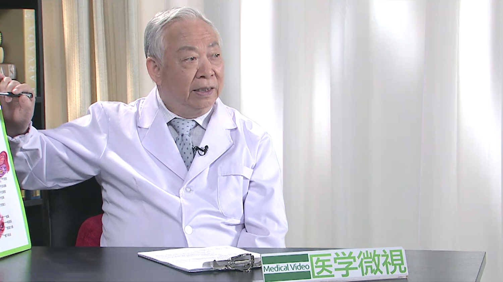

1.117 子宫肌瘤¶
曹泽毅 主任医师¶

曾任卫生部副部长；曾任中华医学会常务副会长；
曾任中华医学会妇产科分会、妇科肿瘤学分会 主任委员；曾任华西医科大学校长；中国医科大学航空总医院名誉院长；北京大学第一附属医院妇产科名誉主任；香港大学、香港中文大学名誉教授；国际妇科肿瘤学会会员；瑞士妇产科学会名誉会员；美国哈佛大学医学院客座教授；美国M.D.Anderson肿瘤医院客座教授；《中华妇产科杂志》名誉总编辑；《国际妇科肿瘤杂志》资深编辑。
主要成就： 从医50余年，共培养了32名博士、硕士及2名博士后；主要科研领域是妇产科学、妇科肿瘤学；自1961年开始进行子宫颈癌的研究和临床诊断治疗，特别是广泛手术和淋巴转移的治疗方法；1982年首次报道女性生殖系统生理和肿瘤病理雌、孕激素受体结果；1996年首次报道通过以腹膜后间隙作为给药的途径进行淋巴结癌转移化疗；1999年主编的《中华妇产科学》获2001年全国优秀图书二等奖，《妇科肿瘤学》获2000年北京市科技进步二等奖；主编包括高等教材、妇产科参考书等专著10余部专著。
专业特长： 擅长妇科疑难病和妇科肿瘤，特别是宫颈癌的早期诊断、手术治疗与预防，对晚期、复发性宫颈癌的手术治疗有丰富的经验;各种妇科肿瘤手术和经阴道手术。
子宫肌瘤是怎么回事？¶
子宫肌瘤，听这个名字就知道，这个瘤子是长在子宫上的，另外这个子宫肌瘤，它是一个良性的（肿瘤），它也是我们人的一个器官，最容易长瘤子的地方，而且可以长的很多的，但是它是良性的子宫肌瘤。
这个子宫肌瘤为什么会长那么多，或者为什么会发生，现在还不十分清楚，当然我们知道有一些关系跟它很密切，比如说子宫肌瘤，它一定是跟妇女的内分泌有关系，换句话说，就跟她的卵巢的功能有关系。
再具体的说，就跟卵巢分泌的雌激素，孕激素有关系。那这个意思就是很明显了，如果这个女孩子，在很年幼，还没有到成熟的时候，没有到达青春期，她的内分泌还没有建立的时候，子宫肌瘤是很少的，就是说如果这个妇女到了一个性成熟的年龄，所谓的就是生育期的年龄，子宫（肌瘤）开始多起来，35岁到45岁，这个时间更多，那么最终它是什么原因，还不十分清楚，只是知道有几个关系，就是她一定是和卵巢的内分泌，雌激素孕激素有关。
另外我们还知道跟年龄有关，另外就是说现在也发现，跟这个遗传也有关，有时候家里头有母亲有子宫肌瘤，这女孩子也很容易有，姐妹同时有，也很常见，跟家族也有一定关系，但是它始终就是一个良性的肿瘤，它基本上不会怎么变，所以这就是我们常说的子宫肌瘤。
因此，患病的人相当的普遍，从女性来讲，如果说所有的女性来讲，大概三分之一都有子宫肌瘤，30岁到45岁这个年龄段，可能一半，有二分之一都会有，这是一个很常见的一个肿瘤，但是它是良性的，很多人也了解子宫肌瘤，也觉得它是良性的，也不在意，而且子宫肌瘤呢，它有时候不产生任何症状。
所以有些人，患了子宫肌瘤，可能不知道，甚至于永远都不知道，它因为很小，没有症状就不知道，所以真正的子宫肌瘤，到底在我们妇女有多少发生，不是很准确，因为有的人她没有症状，不去检查，所以就不知道了，总的来说，是一个常见的，很普遍的一个良性的肿瘤。
子宫肌瘤是哪些原因引起的？¶
这个子宫肌瘤为什么会长那么多，或者为什么会发生，现在还不十分清楚，当然我们知道有一些关系跟它很密切，比如说子宫肌瘤，它一定是跟妇女的内分泌有关系，换句话说，就跟她的卵巢的功能有关系。
再具体的说，就跟卵巢分泌的雌激素，孕激素有关系，那这个意思就是很明显了，如果这个女孩子，在很年幼，还没有到成熟的时候，没有到达青春期，她的内分泌还没有建立的时候，子宫肌瘤是很少的，就是说如果这个妇女到了一个性成熟的年龄，所谓的就是生育期的年龄，子宫（肌瘤）开始多起来，35岁到45岁，这个时间更多，那么最终它是什么原因，还不十分清楚，只是知道有几个关系，就是她一定是和卵巢的内分泌，雌激素孕激素有关。
另外我们还知道跟年龄有关，另外就是说现在也发现，跟这个遗传也有关，有时候家里头有母亲有子宫肌瘤，这女孩子也很容易有，姐妹同时有，也很常见，跟家族也有一定关系，但是它始终就是一个良性的肿瘤，它基本上不会怎么变，所以这就是我们常说的子宫肌瘤。
子宫肌瘤都有哪些类型？¶
这个子宫肌瘤，我们叫它肌瘤，就是它的发生是在子宫的肌纤维，肌肉的细胞过度的增生，就形成了一个小瘤子，这个瘤子就是由子宫肌平滑肌的肌纤维增生长起来的，它长的时候，可能比较慢，它长的这个肌瘤的周围，它就对周围其他的细胞有一些压迫，就形成小的一个纤维膜，把它给包住了，就像长了一个果子一样，它有一个膜把它包住的，这是良性肿瘤的一个特点。
另外，因为这个子宫还是这么大，这是子宫底，这是子宫体，这是子宫颈，这是子宫腔，那么它这个肌瘤，在所有这几个部位都可以长，在子宫的这些地方都可以长，所以说我们又一般把它分成了三个大的不同的类型：
一种它就是长的子宫肌层里头，肌肉里头，这个肉里头，这个就叫子宫的肌壁间肌瘤，就是肌肉的中间长的，这是最多见的，最常见的。
第二种，就长在子宫外面了，从子宫肌壁往外面长，往肚子里头长，就跑到外面长了，长一个大瘤子，一个根带着，这就叫浆膜下子宫肌瘤。
另外一种比较少的，在子宫腔里头，子宫内膜下面，这就叫粘膜下子宫肌瘤。
这三种肌瘤，这个子宫肌壁之间长的肌瘤，大概最多在70%左右，这个浆膜下肌瘤的占10%-20%左右，这个黏膜下肌瘤，最少，大概不到10%，当然另外，又分了部位，比如长在子宫上面的，这叫子宫肌瘤，长到下面的，子宫颈这儿长的，叫子宫颈肌瘤。
还有一种，它长在子宫的外面，他往阔韧带里头长了，这叫阔韧带肌瘤，根据它的部位不同，分这几种。
出现哪些症状就要注意患有子宫肌瘤的可能？¶
不同的部位，它的表现不一样，给这个人带来的影响不一样，或者说症状不一样，我们医生发现了之后的处理，一些方法原则也不一样，比如说绝大多数长在子宫肌壁的肌瘤，有一般就可以有症状，它把这个子宫撑大了，那么子宫腔也就受影响了。
一般来说，月经就可能就多一些，比正常的多一些，一个最典型的子宫肌瘤的一个症状是什么，就是两个月经之间，这个时间缩短了，比如一般我们是28天到30天来一次月经，现在就变成20天左右就来一次，平常一次月经大概是5天左右，现在她这次来一次月经可能要7天，或者10天，那这个意思就是说，间期缩短了，经期延长了，这就是子宫肌瘤的一个典型症状，这是一种。
第二个，如果这个子宫肌瘤长在外面，浆膜下，没症状，不影响月经，它不影响子宫腔了，就没有症状，如果小，自己摸不着，如果大，可以摸到一个活动的一个包块，这种浆膜下一般就没有什么表现，没有什么症状，所以不太容易发现。
第三种，子宫腔的粘膜下肌瘤，这个是最容易被发现的。因为它最容易引起月经的变化，在子宫腔里头，往往就是月经过多，月经量大，月经的时间有时候好像根本就分不清楚了，来了几天，过几天又来了，甚至于可以造成妇女贫血，很严重的贫血，就是出血多，这是粘膜下肌瘤的一个典型症状，这种粘膜下肌瘤，往往病人就到医院来看了，一查发现是粘膜下肌瘤，那么子宫肌壁，有时候没有很明显的症状她也不来，这种浆膜下的有症状了，也不一定来，所以大家子宫肌瘤的表现是这几种。
像子宫颈的肌瘤，这个部分的肌瘤比较少，它的特点是什么，子宫颈周围都有一些筋膜把它包住的，如果你长了肌瘤的话，它就往外面要撑，而这旁边很重要的就是膀胱，输卵管，直肠，都挨着的，子宫颈肌瘤也是很容易有症状，所以这几种不同的部位，和长的方式不一样，这子宫肌瘤的表现，这是很重要的。
子宫肌瘤对身体会产生哪些危害？¶
我们也没有对子宫肌瘤做普查，因为它是个良性的病，对健康影响不是很大，病人有事就来了，或者健康普查有时候会发现，所以说这个子宫肌瘤本身，它一般来说很多老百姓也知道，但是也不是很重视，所以这是它的一个特点，但是我们要说子宫肌瘤，还是需要高度重视的，因为既然是一个瘤子，良性肿瘤，它既然生长了，在你的子宫上，它就会慢慢地长大，这是它的特点。
当然它一般来说，它不会转移，也不会有恶性肿瘤那些表现，但是它慢慢长大，只要你月经还有，只要你的内分泌还有，它就长，所以有时候也可以长得很大，这个子宫肌瘤要是从20多岁开始长，你不管它，到了30多岁，40多岁的时候，可以长到有8厘米，10厘米，十几厘米，20厘米都可以，比较慢，这是一个。
第二个，它可以长得很多，这子宫体上，子宫底上，肌壁上，到处可以长很多，当然也可以长一个，长得很大，但是多数的情况，大概都是两三个，这是很常见的。
那么还有更多的情况，长十几个，长二三十个，长四五十个，都有的，小的就像豌豆，或者绿豆那么大，大的可以鸡蛋大，鹅蛋大，拳头大，可以长几十个，我遇到的一个子宫肌瘤，我们一个一个把它剥出来，一百零几个，一个子宫上，可以长很多，这也是它的特点。
子宫肌瘤它是一个多发，而且在整个子宫的各个部位都可以长，它最常见影响的就是月经的变化，多数的人因为月经的变化来看病，既然你们都知道了，长那么多，也可以长得很大，肯定要影响这个子宫腔，要影响输卵管，要影响怀孕，现在也有好多（女性）不怀孕，查子宫肌瘤，它把输卵管压住了，子宫腔变形了，她也不怀孕，她也来看，它有这些影响。
如何确诊子宫肌瘤？¶
子宫肌瘤检查是很简单的，一个妇女她有这些表现，或者这些症状，或者有感觉，有时候瘤子大了，前面压着膀胱，老是想小便，或者压到直肠，大便不顺畅，一般我们就做一个盆腔检查，就是妇科检查。
就是医生戴了手套，一个手在阴道，一个手在腹部，摸着子宫，一查，只要稍微有一点经验的妇科大夫就知道了，正常的子宫，大概就是8厘米乘5厘米乘3厘米一个那么大小，这个子宫肌瘤一摸，大了，而且有一个一个的不平衡的包，摸起来像一个怀孕的两个月，或者我们经常用月份来形容，或者三个月，或者甚至五个月，那么大的子宫，一查就知道了。
另外检查的时候，可以感觉这个子宫肌瘤，是比较光滑的，跟周围是分得开的，这个子宫是可以活动的，一般它不会有什么粘连的，摸起来的感觉，就是有韧性的，是一个实在的，不是一个囊性的东西，跟子宫完全是一块的。
这个检查90%都可以肯定，很容易，现在更简单了，现在一般做那个检查之后还不行，就做个B超，B超一看就知道，或者还需要做一个CT，也很容易就看见了，过去没有B超，没有CT就这么检查，一样可以很准确，很容易，只要一检查就发现了。
子宫肌瘤要与哪些疾病区分开？¶
这个也很重要，子宫肌瘤，它是良性的，不管它是多啊少啊，反正都关系不是太大，但是现在要注意的就是，一个就是另外的子宫长大要注意，那就是子宫内膜癌，子宫内膜的癌症，子宫也可以长大，但一般它就没有这么大的包块，子宫里头长癌了，这是可以长大的。
第二个，有时候把子宫颈癌，子宫颈可以长的很大，所以有时候没有经验的大夫摸起来，也不太容易分别，是不是子宫颈癌的一种类型，像子宫颈的腺癌，就不要把它当成是子宫肌瘤了，这个也是很重要的。
另外当然就是如果这个子宫周围输卵管、卵巢、包块，跟这个子宫粘在一块了，分不开了，摸起来好像这是一个大包，实际上是炎症，是输卵管的，或者卵巢的粘连的，这个也要分开。
另外在我们过去，也常常遇到，现在比较少了，就是盆腔的结核，就是肺结核跑到子宫上来了，这个结核也可以形成包块，把子宫包起来，或者跟子宫旁边连起来，也有时候不太好分别，所以这些就需要我们做B超，或者做CT，它可以帮助我们分辨。
但是最重要的有一个问题，刚才说子宫肌瘤是良性的，或者说98%左右都是良性的，那么还有1%到2%，可能是恶性的，那比较少，但是少也有，（恶性的肿瘤占）1%到1.5%左右，这个子宫肌瘤可以是恶性的，那恶性的就不叫肌瘤了，另外一个名字就叫子宫肉瘤，这个肉瘤就是恶性的。
子宫肌瘤，不管它有出血，可能有点压迫，有点不舒服，那都是不重要的，不会有严重的后果，但是如果是子宫肉瘤的话，它就是一种恶性度很高的瘤子，它就很容易发生转移，侵犯，而且复发的机会也很高，转移的速度也很快，子宫肉瘤它的死亡率就是比较高的，这个也是恶性的一个不好的（后果）。
不过幸亏它在子宫肌瘤里头，只占了1%左右，不到2%，这个比例也很小，但是再小，我们医生也好，病人也好，不要放松警惕，你碰上了，那你就很困难，所以一定要早一点发现，预防，不要它成为恶性。
子宫肌瘤会变成恶性肿瘤吗？¶
子宫肌瘤是良性的，或者说98%左右都是良性的，那么还有1%到2%，可能是恶性的，那比较少，但是少也有，（恶性的肿瘤占）1%到1.5%左右，这个子宫肌瘤可以是恶性的，那恶性的就不叫肌瘤了，另外一个名字就叫子宫肉瘤，这个肉瘤就是恶性的。
刚才说子宫肌瘤，不管它有出血，可能有点压迫，有点不舒服，那都是不重要的，不会有严重的后果，但是如果是子宫肉瘤的话，它就是一种恶性度很高的瘤子，它就很容易发生转移，侵犯，而且复发的机会也很高，转移的速度也很快，子宫肉瘤它的死亡率就是比较高的，这个也是恶性的一个不好的（后果）。
不过幸亏它在子宫肌瘤里头，只占了1%左右，不到2%，这个比例也很小，但是再小，我们医生也好，病人也好，不要放松警惕，你碰上了，那你就很困难，所以一定要早一点发现，预防，不要它成为恶性。
它为什么从良性变成恶性，现在这个还不是很清楚，但是我们知道有些情况，要提醒我们高度重视的，绝大多数子宫肌瘤是良性的，可以不那么着急治疗，都不是那种很急迫的，但是有几种情况要注意，如果你这个子宫肌瘤，比如说你原来去年、前年，查到有个子宫肌瘤，这么大，没关系，你也不在乎，也没症状，可以观察。
但是如果这个子宫肌瘤在最近，你查，不到一年，或者半年不到，就发现它长的特别快，一般长的很慢的子宫肌瘤，一两年，两三年也长不了多大一点点，如果突然长的比较快，你要小心了，这个会不会它已经变成肉瘤了，这是一个。
第二个，原来有的这个子宫肌瘤，没什么症状，也没有不舒服，可最近这个子宫肌瘤那个地方觉得经常有症状，比较疼，或者肚子旁边周围都疼，不舒服，或者是出血就明显的比原来就多了，多一倍，多两倍，症状明显了，要小心，它会变化了。
第三个就是，子宫肌瘤可以不一定都要处理，可以观察，但是到了45岁，50岁，你这个子宫肌瘤还在，还没有缩小，就是说到了这个年龄大的时候，要小心，年龄越大，它变化的机会可能性就比较大，这些情况呢，我们还是建议要定期去看，及早的发现，不要让它变成恶性，良性的子宫肌瘤处理非常容易，效果也很好。
什么情况下要警惕子宫肌瘤恶变的可能？¶
它为什么从良性变成恶性，现在这个还不是很清楚，但是我们知道有些情况，要提醒我们高度重视的，绝大多数子宫肌瘤是良性的，可以不那么着急治疗，都不是那种很急迫的。
但是有几种情况要注意，如果你这个子宫肌瘤，比如说你原来去年、前年，查到有个子宫肌瘤，这么大，没关系，你也不在乎，也没症状，可以观察，但是如果这个子宫肌瘤在最近，你查，不到一年，或者半年不到，就发现它长的特别快，一般长的很慢的子宫肌瘤，一两年，两三年也长不了多大一点点，如果突然长的比较快，你要小心了，这个会不会它已经变成肉瘤了，这是一个。
第二个，原来有的这个子宫肌瘤，没什么症状，也没有不舒服，可最近这个子宫肌瘤那个地方觉得经常有症状，比较疼，或者肚子旁边周围都疼，不舒服，或者是出血就明显的比原来就多了，多一倍，多两倍，症状明显了，要小心，它会变化了。
第三个就是，子宫肌瘤可以不一定都要处理，可以观察，但是到了45岁，50岁，你这个子宫肌瘤还在，还没有缩小，就是说到了这个年龄大的时候，要小心，年龄越大，它变化的机会可能性就比较大，这些情况呢，我们还是建议要定期去看，及早的发现，不要让它变成恶性，良性的子宫肌瘤处理非常容易，效果也很好。
子宫肌瘤都有哪些治疗方法？¶
这里就说到子宫肌瘤的处理问题，如果发现了子宫肌瘤，我们怎么办？
首先一个是，我们要看这个病人的年龄，如果这个病人的年龄比较轻，一个原则，肯定是要保护她的子宫，如果肌瘤很小，又是没有症状，可以不管它，观察，看她有什么变化，或者我们在这段时间，这个女孩子她愿意很快要结婚，生孩子，就让她生孩子，有个肌瘤不影响怀孕，这个是一个。
如果这个肌瘤比较大，超过了2厘米，3厘米，或者更大，这样我们就考虑考虑要影响她怀孕，尽管它是良性的，或者她本人有要求，我们也建议把这个瘤子给她去掉，就做个手术，把瘤子给剥出来，它不是有个膜吗，把这个瘤子剥出来，把子宫修补上，这是可以的。
特别是有一两个，或者两三个比较明显的剥出来，如果太多了，有几十个那种，你就比较麻烦了，怎么剥，剥子宫就不能用了，子宫是可以把瘤子取出来，把子宫修复好，这是一种。
另外比如说这个人，子宫肌瘤长的比较多，年龄也三十多，四十岁了，也不打算将来要生孩子了，这种情况呢，也可以就把子宫就切掉了，连肌瘤也就切掉了，这问题就解决了，这也是一个办法。
所以子宫肌瘤现在多数的处理，就是做手术，把子宫肌瘤去掉，把子宫修补上，这样可以让她怀孕，让她恢复正常的月经，都一样，这是最多最多的做法，但少数的子宫她不需要了，年龄也差不多了，我也不愿意再让她老来有症状，把子宫就切掉了，这是比较少的。
另外还有一种治疗，也可以用药物，用药物呢，那就对比较年轻的（女性），希望保留子宫，或者又不太愿意做手术，可以用药物，药物有两种药物，一种就是性激素的这一类的，我们叫GNRH这种药，就是控制一下卵巢的内分泌，内分泌下降了，肌瘤就萎缩了，控制一段时间，肌瘤就萎缩了，你再不用药了，肌瘤也就慢慢就小了，再长起来就慢了，这是一个方法。
还有一种药叫米非司酮，也是控制内分泌的，不过这两个药，一般的情况下，我就不太愿意用这个药。药是可以对子宫肌瘤有作用，但是这个药有副作用，它的副作用就是你把卵巢的功能给影响了。
那么这个病就可能会出现一点那种更年期的症状，哪怕她现在只有30岁，人工的造成了卵巢功能下降，出现一点更年期的症状，比如出汗了，潮热了这些，但以后不用了，她也可以恢复，现在我们的看法，我不太愿意去影响这个妇女的内分泌，因为现在我们觉得内分泌对一个女的太重要了，不要去轻易的影响它，或者做手术，把瘤子挖出来，现在手术也很简单了，或者我宁可子宫不要了也没关系，不要影响内分泌。
至于说做手术的话，现在有三种方式可以考虑的，目前做得比较多的，用腹腔镜，这是最近的一些发展，腔镜，微创，就是说在肚子上用穿刺针，有打三个眼的，四个眼，每一个孔大概就是1厘米左右吧，有小孔，把镜子放进去，可以在镜子下面把子宫肌瘤剥出来，把它去掉，然后把它缝上。
这个腹腔镜现在用的很多，现在大概估计80%以上的子宫肌瘤，都通过腹腔镜来做，病人也容易接受，肚子没疤了，就一个小眼，我们国家也开始了，甚至用机器人来做，机器人做腹腔镜，更方便，把肌瘤挖出来，把它缝上，这是最常见的。
当然另外一种，也可以开肚子，开腹，开腹一般就做横的切口，不是纵的，横的切口，打开，眼睛看着，手摸着，把肌瘤一个一个挖出来，把它修补上，这也是它的好处，这个开腹呢，就是更明确，有些不太明显的肌瘤，手都摸得到，把它挖出来，把它缝起来，这个有它的好处。
缺点就是肚子上有个疤痕，腹腔镜就没有，但是现在也有不同的意见，可能你们会提到这个问题，比如瘤子这么大，腹腔镜可以把她肚子把它剥出来，也可以把子宫缝上。那瘤子怎么拿出来，那个孔那么小，瘤子那么大怎么拿，这不是个问题，其实这个问题很早就想了办法，怎么办？
就把子宫肌瘤把它打碎了，把它粉碎了，就放在塑料袋里头拿出来了，这个方法用了很多年了，最初是从美国，西方一些国家，专门有一种粉碎子宫肌瘤的设备，也是从那个管进去，电动，就把那个瘤子就打碎了，然后把它拿出来，这个方法一直到现在还在用，有些人那么大肌瘤，都可以，一点一点把它粉碎了，拿出来，但现在就有不同的看法，对这个方法提出质疑了：
你把肌瘤打碎了，第一个就是，首先你要百分之百要肯定这个肌瘤是良性的，你可以把它剥出来，把它打碎了拿出来，要是恶性就不行，要是恶性就很容易就帮助它扩散，这是要注意的。
第二个就是说，这种把肌瘤打碎了的话，有时候就交给这个病理科大夫去做化验，就没有那么完整了，到底我们最后决定是良性恶性，要做切片，要病理看，完整的肌瘤拿出来，病理科大夫他很清楚，你都把它打碎了来看，有时候就不那么容易，容易发生一些误诊这些。
现在这个，对这个粉碎子宫肌瘤，这本来是一个腹腔镜做子宫肌瘤很大的优势，不开刀了，就一个小眼，现在粉碎这个问题，就有一些不同的看法，甚至于个别的有的病例，就是当初她检查的时候，不可能知道她到底是不是有恶性，就把它打碎了，结果打碎了之后，就有一些小的掉在腹腔里头了，以后就引起了转移，这个就严重了。
我们就提出来，一定要很好的把这个瘤子在肚子里头取下来，把它包好了，在里头打碎它，不要污染腹腔，而且拿出来赶快送去化验，国内是这样的，这是一个做法，现在绝大多数的子宫肌瘤，都是通过腹腔镜，因为它创伤很小，没有伤口，少部分还做开腹。
另外还有一种方法，也（是）不错的，从阴道取，进阴道去，把阴道顶端切开，把瘤子暴露，从阴道把瘤子拿出来，这个也是可以的，三种方法，腹腔镜、开腹、进阴道，都可以做子宫肌瘤的手术，也可以做局部瘤子拿走，也可以把子宫全部切掉。
子宫肌瘤的手术治疗方法有哪些？¶
至于说做手术的话，现在有三种方式可以考虑的。
目前做得比较多的，用腹腔镜，这是最近的一些发展，腔镜，微创，就是说在肚子上用穿刺针，有打三个眼的，四个眼，每一个孔大概就是一公分左右吧，有小孔，把镜子放进去，可以在镜子下面把子宫肌瘤剥出来，把它去掉，然后把它缝上。
这个腹腔镜现在用的很多，现在大概估计80%以上的子宫肌瘤，都通过腹腔镜来做，病人也容易接受，肚子没疤了，就一个小眼，我们国家也开始了，甚至用机器人来做，机器人做腹腔镜，更方便，把肌瘤挖出来，把它缝上，这是最常见的。
当然另外一种，也可以开肚子，开腹，开腹一般就做横的切口，不是纵的，横的切口，打开，眼睛看着，手摸着，把肌瘤一个一个挖出来，把它修补上，这也是它的好处，这个开腹呢，就是更明确，有些不太明显的肌瘤，手都摸得到，把它挖出来，把它缝起来，这个有它的好处，缺点就是肚子上有个疤痕，腹腔镜就没有。
但是现在也有不同的意见，可能你们会提到这个问题，比如瘤子这么大，腹腔镜可以把她肚子把它剥出来，也可以把子宫缝上，那瘤子怎么拿出来，那个孔那么小，瘤子那么大怎么拿，这不是个问题，其实这个问题很早就想了办法，怎么办？
就把子宫肌瘤把它打碎了，把它粉碎了，就放在塑料袋里头拿出来了，这个方法用了很多年了，最初是从美国，西方一些国家，专门有一种粉碎子宫肌瘤的设备，也是从那个管进去，电动，就把那个瘤子就打碎了，然后把它拿出来，这个方法一直到现在还在用，有些人那么大肌瘤，都可以，一点一点把它粉碎了，拿出来，但现在就有不同的看法，对这个方法提出质疑了：
你把肌瘤打碎了，第一个就是，首先你要百分之百要肯定这个肌瘤是良性的，你可以把它剥出来，把它打碎了拿出来，要是恶性就不行，要是恶性就很容易就帮助它扩散，这是要注意的。
第二个就是说，这种把肌瘤打碎了的话，有时候就交给这个病理科大夫去做化验，就没有那么完整了，到底我们最后决定是良性恶性，要做切片，要病理看，完整的肌瘤拿出来，病理科大夫他很清楚，你都把它打碎了来看，有时候就不那么容易，容易发生一些误诊这些。
现在这个，对这个粉碎子宫肌瘤，这本来是一个腹腔镜做子宫肌瘤很大的优势，不开刀了，就一个小眼，现在粉碎这个问题，就有一些不同的看法，甚至于个别的有的病例，就是当初她检查的时候，不可能知道她到底是不是有恶性，就把它打碎了，结果打碎了之后，就有一些小的掉在腹腔里头了，以后就引起了转移，这个就严重了。
我们就提出来，一定要很好的把这个瘤子在肚子里头取下来，把它包好了，在里头打碎它，不要污染腹腔，而且拿出来赶快送去化验，国内是这样的，这是一个做法，现在绝大多数的子宫肌瘤，都是通过腹腔镜，因为它创伤很小，没有伤口，少部分还做开腹。
另外还有一种方法，也（是）不错的，从阴道取，进阴道去，把阴道顶端切开，把瘤子暴露，从阴道把瘤子拿出来，这个也是可以的，三种方法，腹腔镜、开腹、进阴道，都可以做子宫肌瘤的手术，也可以做局部瘤子拿走，也可以把子宫全部切掉。
腹腔镜治疗子宫肌瘤有哪些优缺点？¶
目前做得比较多的，用腹腔镜，这是最近的一些发展，腔镜，微创，就是说在肚子上用穿刺针，有打三个眼的，四个眼，每一个孔大概就是一公分左右吧，有小孔，把镜子放进去，可以在镜子下面把子宫肌瘤剥出来，把它去掉，然后把它缝上。
这个腹腔镜现在用的很多，现在大概估计80%以上的子宫肌瘤，都通过腹腔镜来做，病人也容易接受，肚子没疤了，就一个小眼，我们国家也开始了，甚至用机器人来做，机器人做腹腔镜，更方便，把肌瘤挖出来，把它缝上，这是最常见的。
但是现在也有不同的意见，可能你们会提到这个问题，比如瘤子这么大，腹腔镜可以把她肚子把它剥出来，也可以把子宫缝上，那瘤子怎么拿出来，那个孔那么小，瘤子那么大怎么拿，这不是个问题，其实这个问题很早就想了办法，怎么办？
就把子宫肌瘤把它打碎了，把它粉碎了，就放在塑料袋里头拿出来了，这个方法用了很多年了，最初是从美国，西方一些国家，专门有一种粉碎子宫肌瘤的设备，也是从那个管进去，电动，就把那个瘤子就打碎了，然后把它拿出来，这个方法一直到现在还在用，有些人那么大肌瘤，都可以，一点一点把它粉碎了，拿出来，但现在就有不同的看法，对这个方法提出质疑了：
你把肌瘤打碎了，第一个就是，首先你要百分之百要肯定这个肌瘤是良性的，你可以把它剥出来，把它打碎了拿出来，要是恶性就不行，要是恶性就很容易就帮助它扩散，这是要注意的。
第二个就是说，这种把肌瘤打碎了的话，有时候就交给这个病理科大夫去做化验，就没有那么完整了，到底我们最后决定是良性恶性，要做切片，要病理看，完整的肌瘤拿出来，病理科大夫他很清楚，你都把它打碎了来看，有时候就不那么容易，容易发生一些误诊这些。
现在这个，对这个粉碎子宫肌瘤，这本来是一个腹腔镜做子宫肌瘤很大的优势，不开刀了，就一个小眼，现在粉碎这个问题，就有一些不同的看法，甚至于个别的有的病例，就是当初她检查的时候，不可能知道她到底是不是有恶性，就把它打碎了，结果打碎了之后，就有一些小的掉在腹腔里头了，以后就引起了转移，这个就严重了。
我们就提出来，一定要很好的把这个瘤子在肚子里头取下来，把它包好了，在里头打碎它，不要污染腹腔，而且拿出来赶快送去化验，国内是这样的，这是一个做法，现在绝大多数的子宫肌瘤，都是通过腹腔镜，因为它创伤很小，没有伤口，少部分还做开腹。
子宫肌瘤手术是切除子宫好还是不切好？¶
这是一个很好的问题，经常也有病人有这个疑虑，总觉得子宫对我来说还是一个器官，女性还是很重视这个子宫。
如果说我保持有月经，那表示我这个健康还是很好的，或者我的内分泌还是很好的，这还是很重要的，但是另外有一点，有一个误区，很多人不太了解，那么子宫，它实际上是一个什么器官呢，它主要是一个生育的器官，就是怀孕，生孩子，那你没子宫是不行的，子宫之所以能够怀孕，能够有小孩，关键是卵巢，这两边是个卵巢，卵巢，它能够把一个成熟的卵子排出来，通过输卵管到子宫腔，受精，小孩在里头生长。
第二个，卵巢产生雌激素，孕激素，让你这个女孩子保持青春，保持一个女性的特点，全部是卵巢内分泌的作用，子宫就是一个怀孕，生孩子的作用，所以说我们说如果，当然你这个子宫是好的，没有任何问题，哪怕你30岁，40岁，50岁，60岁，你也不一定切它干什么，它没病，好的。
但是如果这个子宫长了很多肌瘤，而且有症状，有出血，或者有其它的疼痛，或者不舒服压迫，这种情况下，最好把子宫切掉，这时候子宫留它的意义就不大了，那么如果你年轻，你还要生孩子，那肯定不管长几个肌瘤，都给你剥出来，刚才那几个方法都可以，保留子宫，将来怀孕，如果你不怀孕了，不可能怀孕了，那么又长了很多的肌瘤，最好把子宫拿掉，
这个子宫对你来说，用处不大，不好的影响多了，甚至于老是给你出血多，带来你贫血了，贫血也是一个抵抗力降低，也不好，另外就是它成了一个病了，你留着它的意义，就没有要把它去掉的意义更重要，那么去掉有什么坏处，有什么影响没有。
我们就要告诉大家就是，把子宫去掉，只有一个影响，就是不怀孕了，再也不能怀孕了。
除此之外，如果这个手术做得好，手术做得很规范，就把子宫拿掉了，没有任何影响，没有任何副作用，关键就是最重要的要保留卵巢，卵巢是最重要的，卵巢对一个妇女来说，就算是你不生育了，不要孩子了，卵巢也要保留，它很重要。
卵巢保留到40岁，50岁，甚至于50多岁，做手术的时候，卵巢我们都不一定切，都给她留下把这卵巢，卵巢是很重要的，子宫到了时候，确实不要孩子了，或者不能要孩子了，这个子宫就拿掉最好。
子宫肌瘤手术全子宫切除好吗？¶
切子宫还有两种（方法），一个就是切全子宫，把子宫颈都拿掉，这叫全子宫，一个叫部分切除，大部（分）切除，就是把子宫拿掉，子宫颈留下，这两种有什么区别？
有区别，单把子宫拿掉，留个子宫颈，这个本身来说，手术简单，手术容易，恢复也快，阴道就是完整的，子宫颈还在，子宫没有了，不来月经了，子宫的肌瘤也没有了，子宫内膜里头，得癌症的机会也没有了，这是好的。
但是就留下一个子宫颈，留子宫颈的好处是什么呢？这阴道的长度，这个阴道的完整性是好的，这个手术本身影响也小一点，做手术的时候，对膀胱，对直肠的影响也小一点，手术好做，就这个优点。
我们的看法是什么呢？如果切子宫了，最好这个子宫颈别留，实际上现在做这个子宫切除，最近差不多四五十年了，保留子宫颈的手术，基本上不做了，都做全子宫，为什么呢？
第一个，现在大家手术熟练了，现在做全子宫跟做部分子宫，基本上一样，没区别，也不会有什么损伤，过去就是有这种情况发生，现在手术技术提高了，这个手术没有问题。
更重要的原因是什么呢？
子宫颈这小小的东西在这儿，它是这个器官，女性器官，最容易给我们惹事的一个部分，大家也很了解，平常大概50%以上的妇女，很容易有慢性宫颈炎，子宫颈糜烂，这是最普通的，这也是个良性的，但是它就是弄得白带比较多，经常有那种感染，有味，清洁卫生不方便，同时更严重的就是，它容易引起感染，引起发生宫颈癌，是个宫颈癌发生的一个部位。
既然你都做手术，把子宫都拿掉了，你留下一个很容易给你将来发生另外问题的一个部分，没有必要，它没有什么更多的功能，它切掉了，并不影响阴道的长度，我们医生做得好的话不会，也不会影响今后的恢复了以后的性生活，不影响。
但是这个子宫颈是一个最容易发生疾病癌症，宫颈癌，你把它留下，就没有意义了，如果说过去要做子宫颈的全子宫切除，手术比较难做，有些医生不太容易掌握，那是一个原因，但是最近的几十年，这个问题没有了，都解决了。
所以现在基本上做子宫切除的，都不留子宫颈，叫子宫全切，这最大的好处，子宫颈癌你就不担心了，也不用去检查了，就放心了，这个是现在做手术一个不同，如果子宫有肌瘤，再加上子宫颈也有一点炎症的问题，最好全子宫切除。
子宫肌瘤尽早做手术治疗有哪些好处？¶
我们现在谈到的重要的是，保留卵巢，一定要保留卵巢，这个是关键，甚至于我们建议，为什么子宫肌瘤，有的说我可做可不做，我没有太大症状，我肌瘤也不是太大，我可不可以不做子宫肌瘤做手术，我就观察，不是到的更年期，到了月经回来，这个肌瘤慢慢就萎缩了吗，就变小了吗，我何必做呢？
是，这是一个理由，但是我现在要告诉你的就是，我们有另外的想法，比如说这个肌瘤，到了你40多岁50岁，它慢慢就萎缩了，你月经就会要停了，你的新的问题出来了，更年期症状就有了，肌瘤不长了，更年期出来了，更年期就是出汗了，烦躁了，睡眠不好了，骨质疏松了，女性的老化的症状就开始出来，这是很正常的。
我们现在的看法是，我一定要千方百计保留你的卵巢，目的是什么呢？希望延缓你的更年期的到来，推迟，让你更长一点保留你的青春活力，但是到了一定时候，实在你这两个卵巢不行了，功能消退了，就该要到更年期了，我们现在就非常的重视，提倡用医疗的方法，人为的方法，来延缓你的衰老，推迟你的更年期的到来，那就是我们现在叫一种叫激素替代。
不是到了一定年龄，卵巢功能没有了吗，你雌激素下降了吗，所以妇女开始就衰老的现象出来了，现在我用人工的方法，来补充小量的雌激素，让这个妇女就能够，她的更年期就来的比较晚，或者不明显，就能够比较长期的保持她的活力，她的那种相对年轻的状态，这是我们现在要做的，这个是对妇女的生活质量非常重要。
因为我们现在中国的妇女平均寿命快到80，那就是说你月经停了之后，差不多还有30年的时间要过，你让她去变成一个老太太，还是尽量让她延缓她的老化，这个激素替代是很重要的。
如果你这个子宫有肌瘤，哪怕没有症状，你要把它留下，不做手术，那么就注意，如果将来你到了你更年期的时候，我们要打算给你用激素替代的时候，就不行了，矛盾了，你用激素替代，你的子宫肌瘤又恢复，又长起来，你要是把子宫切掉了，我们就能够放心大胆的用激素替代，没有子宫肌瘤的问题了。
所以现在很多妇女就是不理解，你到那个时候，你已经有子宫肌瘤了，而且有症状了，你就等到她自己年龄到了，更年期来，子宫肌瘤萎缩了，保这个子宫，我觉得这个意义不大，我就说宁可把这个子宫拿掉，我们给你用激素替代，保留你这个内分泌的情况，让你年轻化的时间维持的更长，比你留子宫意义大多了，这一点就是要跟大家要说清楚。
子宫肌瘤是可以不做手术，特别到了更年期观察，它只要不长了，但是这是过去的概念，就这样，你就放弃了做这个激素替代的可能性，你就不要再用雌激素再去刺激它，让它再长起来，甚至于你弄得不好，它变成了恶性，那不更不好吗？
所以说就，我们的意见，子宫肌瘤有条件的妇女，比如说她了解，就算是没有症状，到了年龄，我可以做个手术，将来我需要的话我就做激素替代，只要让我的生活质量更好，这个也是一种子宫肌瘤的治疗要考虑的。
子宫肌瘤术后会留后遗症吗？¶
应该说子宫肌瘤，一个单纯的子宫肌瘤，做一个手术，不管是腹腔镜，还是开腹，还是进阴道，都不会有任何后遗症，就只切子宫，不要去影响卵巢，保护好卵巢，就把子宫切掉了，我们就用现在一个很典型的一个子宫全切除的一个手术方式。
这样下来，大概一个手术的话，一个礼拜恢复了，开腹的手术大概就是十天左右就可以到处活动，回家了，腹腔镜更早了，恢复早，没有任何副作用。
恢复了之后，一般的情况下，大概两个月左右就可以恢复去工作，上班，都可以，过了三个月左右，可以恢复性生活，这不影响，没有什么影响，这个手术现在也比较规范，应该说是比较中等偏小的一个手术，手术后恢复也应该很快，没有任何影响。
子宫肌瘤术后会影响性生活吗？¶
没有影响，这个手术子宫全切，我们是尽量做到，因为它是良性的，跟上次我们讲的子宫颈癌不一样了，它是紧贴着子宫颈，把子宫拿走了，所以说最后把阴道顶端把它修复起来，这个阴道的长度，跟阴道整个顶端的宽度，一点都不受影响，它预后应该是很好的。
三个月之后，整个的伤口完全愈合了，所以那个时候，如果我恢复性生活，跟原来没有两样，完全是一样的，不受影响，这点从大量的手术看来，都能够说明，子宫全切，简单的子宫全切，没有任何带来的不良的后遗现象。
子宫肌瘤术后多久才可以怀孕？¶
一个要看你剥出来的肌瘤有几个，多少，你对这个子宫损伤的程度，比如你剥一个肌瘤，你把它缝起来，有一个伤口，剥两个，子宫有两个（伤口），或者大小不同的，根据这个剥肌瘤的大小和多少，来看她子宫能够恢复的程度，一般来说，三个月，没有问题。
但是因为它剥掉了之后，把它修补起来，它总是一个瘢痕吧，这个瘢痕呢，有时候对这个子宫，如果怀孕要撑大，它那个瘢痕的地方弹性就比较少，所以子宫肌瘤如果是瘢痕比较大，流质比较多，剥除的比较深，这个瘢痕就有一点担心，怕她将来怀孕的时候，会不会那个地方会破开，它不像正常的子宫肌瘤那么有弹性了。
有的医生为了安全起见，也建议她，最好半年以后，或者一年以后再怀孕，还是要根据她的肌瘤的大小，手术当时的伤口的大小，愈合的程度来决定。
不过我个人的看法，如果瘤子不是太大，愈合也很顺利，没有感染，估计瘢痕的不是很重，那么可以短，三个月左右可以让她怀孕，但是这种怀孕，怀上了，要密切观察，就是按常规说，比如说一个月检查一次，或者半个月检查一次，看看这个子宫的瘢痕有没有变化的情况，因为你既然是这个子宫肌瘤，把它挖出去了，你想想怀孕，这个子宫肌瘤不怀孕只是一个影响，是不是还有别的原因影响你不怀孕呢。
我们也希望子宫肌瘤的手术做完了之后，尽可能早一点让她怀孕，举例说，我跟你说，手术三个月了，准备怀孕了，但我说可以准备怀孕，不是你马上就能怀得上的，你还有一段时间，甚至于半年或者一年以后才能怀上，所以这一点，我们说不是说一定非要多长（时间），还是根据手术的大小，估计它的伤口的愈合来决定，一般半年左右以后就可以。
子宫肌瘤会影响生育吗？¶
有的人根本自己就不知道，没发现，说怀孕了，怀孕以后，子宫长大了，这个瘤子也跟着长大，在外面它不影响，像这种情况，如果一个子宫肌瘤浆膜下的，子宫的表面上长了个肌瘤。
尽管它可以随着你怀孕的时间（增长），子宫出血了，营养好了，它瘤子也长的快了，瘤子也长大了，可以不管它，在浆膜下的子宫肌瘤怀孕，你不管它，你就等它自己生产，自己分娩，产后再来处理。
因为如果长到浆膜下的子宫肌瘤这些地方，它也不影响你分娩，你子宫还是可以收缩，如果收缩不好，影响了子宫，你该做剖宫产做剖宫产。
那么做剖宫产的时候，要不要同时做这个肌瘤呢，那就根据医生当时的判断，如果这个肌瘤完全就是浆膜下，那个根比较小，不会有太多的出血，那么同时就把它拿走了，如果这个肌瘤在肌层里头比较深，埋得比较深，就一半在外面，一半在肌肉里头，别去掏它，你怀孕了，子宫充血很厉害，去做（摘除手术），可能当时会出血很多，你等它恢复了以后，再来处理子宫肌瘤。
怀孕了，查出子宫肌瘤怎么办？¶
已经怀孕了，多数的情况不处理，她既然能怀孕，她有个肌瘤没有关系，不影响她，除非有一条，这个肌瘤是长在下面的，子宫颈的，或者阔韧带的这些地方的肌瘤她是不能动的，将来怀孕了那么大，子宫上去了，生孩子就不行了，它就把这个产道挡住了。所以这种就必须要做好剖宫产准备。
那么长在上面的这些无所谓了，自己还可以生，所以这种子宫肌瘤在妊娠期间，一般来说，最好不去动它，因为这个时候子宫肌瘤充血很厉害，子宫也充血很厉害，如果这个时候你去做的话，会引起比较严重的出血，这是可以避免的。
子宫肌瘤会复发吗？¶
它不是复发，它本身就是多发，它就很容易多发子宫肌瘤，你切这两个大的时候，旁边有几个很小的，你根本就没有发现，或者很小，你也不在意，你就把大的拿走了，过了一段时间，那两个小的又长出来了，那个不叫复发，它本身就是它多发的子宫肌瘤，你原来没有拿走，现在又长起来了，就是这个意思。
它不像那个恶性肿瘤，它要复发，不是复发的，但是它就是可以多发，大的，不是有一个病人一百多个子宫肌瘤，大的可以有拳头大，鸡蛋大，小的就是豌豆大，绿豆大，还有像小米粒那么大，都可以，那些你发现不了，你不知道，你把大的拿走了，过一段时间，那些它又长起来了，那不叫复发，又多发的肌瘤，这个没有关系的，它不转移的。
子宫肌瘤会转移吗？¶
谈到这个问题，我们讲这个是医学上的一种特殊情况，有，但是这个情况少，非常少，就是有一种子宫肌瘤，从我们医学的病理上来说，良性的，没有恶性的特点，但是它这种细胞，它就容易跟着血管走了，就像恶性一样，可以跑了，但是它还是良性的，它甚至于可以跑到肾上去，可以跑到心脏里头去，沿着这个血管跑到心脏里头去，跑到肺里头去，或者到腹腔的其它地方也可以长。
但是不管它跑到哪里去，你把它切下来做病理检查，它还是良性的，这种叫增生性，或者叫活跃的子宫肌瘤，这种子宫肌瘤是比例是很少（的），很少见，绝大多数没有这种情况，但至于说为什么它会成这样，现在也解释不了，但是有这种情况，我们临床上也可以把它，都把它清除掉，它不会有复发，也不会有转移，它是良性的。
如何早期发现子宫肌瘤？¶
其实肌瘤，这个是很容易（发现）的，如果常规的，我们做体检，一般都可以发现，比如说做盆腔的检查，有经验的大夫可以发现很小的子宫肌瘤，但是现在做检查，都要做B超了吧，B超可以发现有0.5厘米，或者更小的肌瘤都可以发现，在肌肉里头都可以。
这么小的肌瘤发现的话，不会有任何症状，没有太多的临床的意义，那发现了之后，可以告诉你，定期下一次再来检查，看它有没有什么变化，长大没有，有什么影响没有，它一般都很慢，长的很慢，子宫肌瘤很容易发现，而且它生长的周期是很慢的，给我们很多时间去观察它。
子宫肌瘤都有哪些特点？¶
我想子宫肌瘤的话，可以总结起来说这么几句话：
一个是常见，特别是从青春期到生育期的妇女，这一段时间，常见，常到什么程度，常见可以到三分之一到二分之一的妇女，都可以有子宫肌瘤。
第二个，绝大多数她没有什么症状，或者不严重，所以说不是非常急迫需要马上去处理的，可以观察。
第三个，绝大多数的子宫肌瘤，多数的不一定影响你怀孕，你可以怀孕，如果你结婚了，有几年都没有怀孕，发现有子宫肌瘤，可能会有影响，那么可以做手术，把这个肌瘤挖出来，然后帮助你怀孕，成功的机会是很大的，这是可以的。
第四个，尽管子宫肌瘤，是良性的，多数的，我们也要警惕有极少数可能会恶变，那么就是说，突然之间生长快的，原来没有症状，现在有症状的，或者你的年龄慢慢大了，肌瘤还不消退的，这些要注意会不会有恶变的可能性，定期检查。
最后就是，如果有子宫肌瘤，又有一定的症状，建议最好是做手术，把它切掉，保留双侧卵巢，把肌瘤和子宫切掉，这样不但是解决子宫肌瘤的问题，这个手术很简单，可以腹腔镜，可以开腹，也可以进阴道，都可以，手术很简单，可以把这个子宫肌瘤去掉，而且你将来需要的时候，可以做激素替代，这些优点。
对子宫肌瘤来说，它是一个良性病，大家也不用担心，尽管很普遍，要处理也有这么多的选择，都很容易，现在也不会有太多的其它的副作用，所以说大家可以找医生商量，根据你们的具体情况，是观察呢，是做手术呢，做哪一种手术呢，什么时候做呢，都可以，这是一个完全可以处理好的，治疗的效果是非常好的一个良性肿瘤。
哪种类型的子宫肌瘤可能会造成不孕？¶
最容易影响怀孕的，是子宫腔的肌瘤，就是粘膜下肌瘤，它本来就把子宫腔给你占据了，长了一个瘤子，你怀孕肯定就比较困难，或者就算是怀孕了，胚胎也不容易种下去，粘膜下肌瘤，一旦发现，及时手术：
一个，它影响怀孕。
第二个，它症状比较重，出血多，这个一定要及时处理。
第三个，粘膜下肌瘤，还有一个治疗的方法，就通过宫腔镜，把瘤子拿走了，这个手术更小了，从宫腔镜就可以做了，粘膜下肌瘤，所以说这种情况，影响最大最大的是粘膜下肌瘤，其次是子宫壁间的肌瘤，影响最小的就是浆膜下肌瘤，基本上不影响。
子宫肌瘤会遗传吗？¶
有遗传的因素在里头，可能有，母亲有，女儿也可以有，两姐妹也可以有。为什么？
现在有很多东西不是很清楚，但是这个现象，我们是看见有，大家觉得这个也不是一个太大的问题，它是良性疾病，说发现了，根据原则，该怎么处理就处理，真正子宫肌瘤最大的影响。
第一个就是影响她的月经，出血，这是一个，也就当然影响怀孕。
第二个，就是会引起其它的一些，比如说长大了一些症状，压迫、包块、疼痛这些。最后就是千万千万不要让它变成恶性。
子宫肌瘤是一个完全可以治疗的病，治疗效果是可以很好的病，而且很容易发现病，这个应该是让大家都知道，不要害怕，但是该治疗的时候治疗，不要犹豫，可以起到很好的效果。